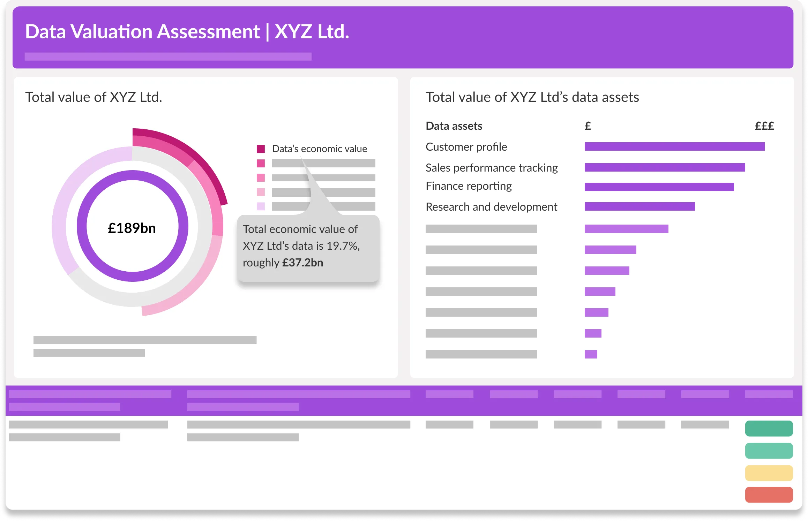
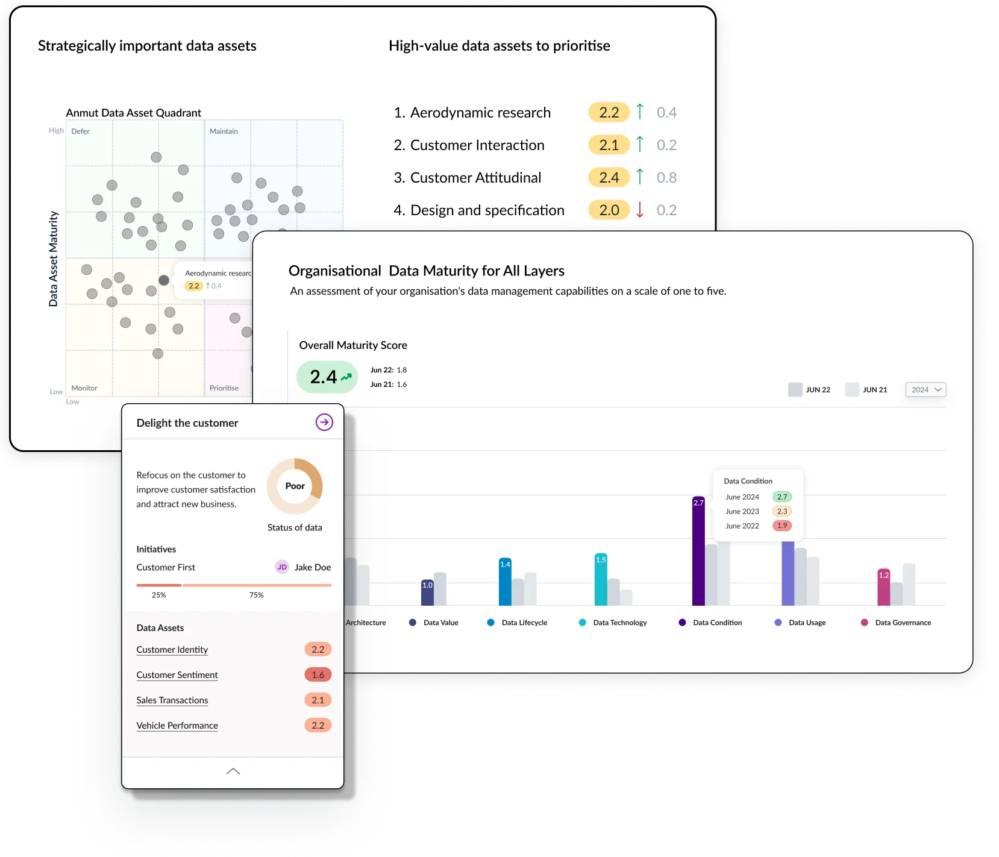
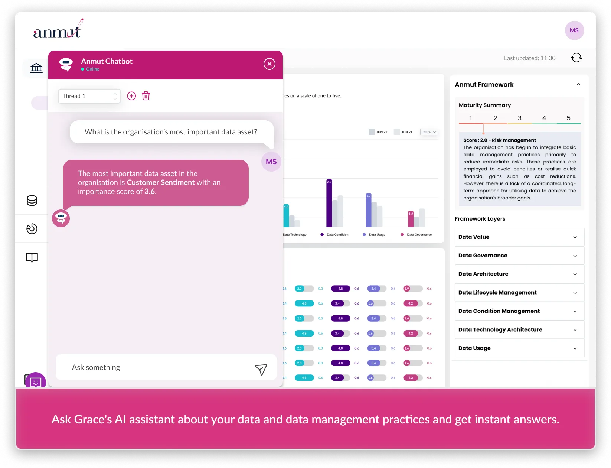
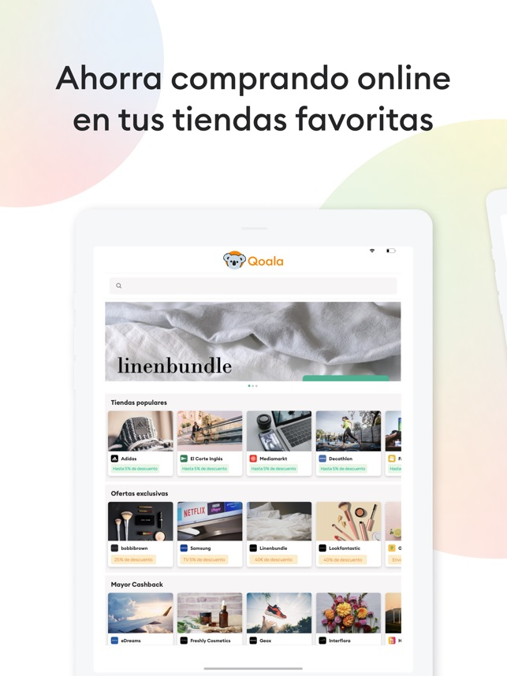

I am a Full Stack Engineer with over 3 years of experience in web development, currently working at Anmut Consulting where I'm building GRACE - a strategic data asset management platform. I have a strong background in Mechanical Engineering and extensive experience with modern JavaScript frameworks including the T3 stack (TypeScript, Next.js, Prisma, tRPC), React, MongoDB, Firebase, Express, and Node.js.
I specialize in test-driven development using Jest, Playwright, and Cypress, and have experience with cloud services including Google Cloud. I'm a fast learner who thrives in challenging environments and can deliver quality results on tight schedules.
Below are some of my recent projects and achievements:

I'm currently working as a Full Stack Engineer at Anmut Consulting, contributing to the development of GRACE - a strategic data asset management platform. My role involves building features for data asset management, risk mitigation, and ROI improvement using the T3 stack.
Key Contributions:
• Full-stack development using T3 stack with PostgreSQL, Mantine UI, Next.js 13, and Next-auth
• Implementation of user interfaces and backend services for effective data asset management
• Collaboration with senior developers to refine code and enhance system performance
• Test-driven development using Jest for unit tests, Playwright and Cypress for integration and E2E testing
• Problem-solving sessions leading to innovative solutions for data handling and visualization challenges
Data Asset Management Dashboard

Key Features:
• Strategic data asset quadrant analysis with maturity scoring
• Organizational data maturity assessment (1-5 scale)
• Historical trend analysis and progress tracking
• Customer-focused initiative management
• Real-time data asset prioritization
AI-Powered Data Assistant

AI Capabilities:
• Interactive chatbot for data queries and insights
• Instant answers about data assets and management practices
• Framework maturity analysis across multiple layers
• Real-time data scoring and recommendations
• Thread-based conversation management
Technical Implementation: Built using the T3 stack (TypeScript, Next.js, Prisma, tRPC) with PostgreSQL database, Mantine UI components, and comprehensive testing using Jest, Playwright, and Cypress. The platform provides enterprise-grade data asset management with AI-powered insights and real-time analytics.
Qoala is a free browser extension that automatically finds and applies the best coupon codes during online checkout. I led the complete rebuild of the web application using Next.js from scratch and implemented the PriceTracker feature.
Technologies & Achievements:
• React and Next.js (website) with Chakra UI for styling
• Google Cloud (Cloud Functions, Cloud SQL), MongoDB, Chrome & Safari extensions
• Integration of microservices: Segment, Amplitude, Customer.io, Mixpanel
• Test-Driven Development using Mocha and Chai
• UI/UX ideation and development of WebApp and landing pages using Webflow
• Collaboration with marketing teams on various critical products and features

Designed and developed the landing page for JoinQoala SL using Webflow with comprehensive back-end integrations to CMS systems. The platform is continuously monitored and maintained using Google Analytics Tools, A/B testing, Customer.io, Mixpanel, and various CRM integrations to optimize conversion rates and user engagement.

A comprehensive job portal web application that is cross-browser compatible and soon to be available on Google Play and App Store. Built using React and Material-UI styled with Tailwind CSS, with Strapi as the backend CMS. Features include job search, filtering, and application management.

A progressive web app-based online platform for vehicle hire and sale, soon to be available on Google Play and App Store. Built with React, Material UI, and Firebase, featuring vehicle listings, booking management, and user authentication systems.

A comprehensive Customer Relationship Management system built for LCR Telecom, featuring customer management, sales tracking, and reporting capabilities. The application demonstrates full-stack development skills with modern web technologies.
Frontend Technologies
- React & Next.js (13+)
- TypeScript & JavaScript
- Mantine UI, Chakra UI, Material UI
- Tailwind CSS & CSS3
- HTML5 & Responsive Design
Backend & Database
- Node.js & Express
- T3 Stack (tRPC, Prisma)
- PostgreSQL & MongoDB
- Firebase & Google Cloud
- REST APIs & GraphQL
Testing & Development
- Jest (Unit Testing)
- Playwright & Cypress (E2E)
- Mocha & Chai (TDD)
- Git & Version Control
- Test-Driven Development
Soft Skills
- Problem Solving
- Analytical Thinking
- Time Management
- Team Collaboration
- Fast Learning